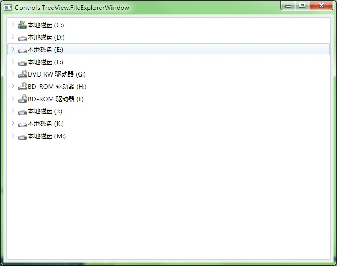
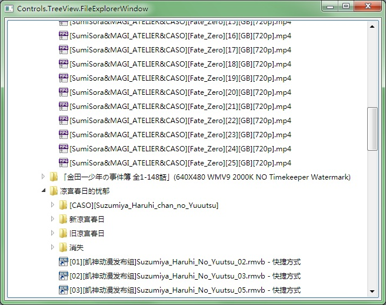

|
|||||
| HOME | GETTING START | DEMOS | DOWNLOAD | DOCUMENT | CONTACT |
TreeView.FileExplorer This demo contains the following code files: Main.cpp
#include "..\CommonLibrary\FileSystemInformation.h"
using namespace vl::collections;
int CALLBACK WinMain(HINSTANCE hInstance, HINSTANCE hPrevInstance, LPSTR lpCmdLine, int CmdShow)
{
return SetupWindowsDirect2DRenderer();
}
/***********************************************************************
SortingAndFilteringWindow
***********************************************************************/
class FileExplorerWindow : public GuiWindow
{
private:
GuiTreeView* treeView;
void OnNodeExpanded(GuiGraphicsComposition* sender, GuiNodeEventArgs& arguments)
{
tree::MemoryNodeProvider* parent=treeView->Nodes()->GetMemoryNode(arguments.node);
if(parent->Children().Count()==1)
{
tree::MemoryNodeProvider* child=parent->Children()[0].Obj();
Ptr<tree::TreeViewItem> childItem=child->GetData().Cast<tree::TreeViewItem>();
if(childItem->text==L"Loading..." && !childItem->tag)
{
GetApplication()->InvokeAsync([parent]()
{
// get back the full path from the item
Ptr<tree::TreeViewItem> item=parent->GetData().Cast<tree::TreeViewItem>();
WString path=item->tag.Cast<ObjectBox<WString>>()->Unbox();
if(path[path.Length()-1]!=L'\\')
{
path+=L"\\";
}
// add sub folders and sub files
List<WString> directories, files;
SearchDirectoriesAndFiles(path, directories, files);
tree::MemoryNodeProvider* directoryNode=parent;
GetApplication()->InvokeInMainThreadAndWait([directoryNode, path, &directories, &files]()
{
FOREACH(WString, file, directories.Wrap())
{
FileExplorerWindow::AddFolder(directoryNode, path+file);
}
FOREACH(WString, file, files.Wrap())
{
FileExplorerWindow::AddFile(directoryNode, path+file);
}
// remove the "Loading..." node
directoryNode->Children().RemoveAt(0);
});
});
}
}
}
static int AddFile(tree::MemoryNodeProvider* parent, const WString& path)
{
Ptr<tree::TreeViewItem> item=new tree::TreeViewItem;
// set the item text using the display name of the file
item->text=GetFileDisplayName(path);
// set the image using the file icon
item->image=GetFileIcon(path, SHGFI_SMALLICON | SHGFI_ICON);
// tag the full path to the item
item->tag=new ObjectBox<WString>(path);
int index=parent->Children().Add(new tree::MemoryNodeProvider(item));
return index;
}
static void AddFolder(tree::MemoryNodeProvider* parent, const WString& path)
{
int index=AddFile(parent, path);
// Add the "loading" item under a folder
Ptr<tree::TreeViewItem> loading=new tree::TreeViewItem;
loading->text=L"Loading...";
parent->Children()[index]->Children().Add(new tree::MemoryNodeProvider(loading));
}
void InitializeFileSystem()
{
wchar_t drives[1024];
GetLogicalDriveStrings(sizeof(drives), drives);
wchar_t* reading=drives;
while(true)
{
WString drive=reading;
if(drive==L"")
{
break;
}
else
{
AddFolder(treeView->Nodes().Obj(), drive);
reading+=drive.Length()+1;
}
}
}
public:
FileExplorerWindow()
:GuiWindow(GetCurrentTheme()->CreateWindowStyle())
{
this->SetText(L"Controls.TreeView.FileExplorerWindow");
// create tree view control to display the local file system
treeView=g::NewTreeView();
treeView->SetHorizontalAlwaysVisible(false);
treeView->SetVerticalAlwaysVisible(false);
treeView->GetBoundsComposition()->SetAlignmentToParent(Margin(4, 4, 4, 4));
// listen to the NodeExpanded event to load the folder content when a folder node is opened
treeView->NodeExpanded.AttachMethod(this, &FileExplorerWindow::OnNodeExpanded);
this->AddChild(treeView);
InitializeFileSystem();
// set the preferred minimum client size
this->GetBoundsComposition()->SetPreferredMinSize(Size(640, 480));
// call this to calculate the size immediately if any indirect content in the table changes
// so that the window can calcaulte its correct size before calling the MoveToScreenCenter()
this->ForceCalculateSizeImmediately();
// move to the screen center
this->MoveToScreenCenter();
}
~FileExplorerWindow()
{
}
};
/***********************************************************************
GuiMain
***********************************************************************/
void GuiMain()
{
GuiWindow* window=new FileExplorerWindow;
GetApplication()->Run(window);
delete window;
}
FileSystemInformation.h
#ifndef GACUI_DEMO_FILE_SYSTEM_INFORMATION
#define GACUI_DEMO_FILE_SYSTEM_INFORMATION
#include "..\..\Public\Source\GacUI.h"
#include <ShlObj.h>
using namespace vl;
using namespace vl::collections;
/***********************************************************************
File System Operations
***********************************************************************/
extern WString GetWindowsDirectory();
extern void SearchDirectoriesAndFiles(const WString& path, List<WString>& directories, List<WString>& files);
extern Ptr<GuiImageData> GetFileIcon(const WString& fullPath, UINT uFlags);
extern WString GetFileDisplayName(const WString& fullPath);
extern WString GetFileTypeName(const WString& fullPath);
extern FILETIME GetFileLastWriteTime(const WString& fullPath);
extern LARGE_INTEGER GetFileSize(const WString& fullPath);
extern WString FileTimeToString(const FILETIME& filetime);
extern WString FileSizeToString(LARGE_INTEGER filesize);
/***********************************************************************
FileProperties
***********************************************************************/
class FileProperties
{
private:
Ptr<GuiImageData> smallIcon;
Ptr<GuiImageData> bigIcon;
WString displayName;
WString typeName;
FILETIME lastWriteTime;
LARGE_INTEGER size;
bool loaded;
WString fullPath;
void Load();
public:
FileProperties(const WString& _fullPath);
Ptr<GuiImageData> GetSmallIcon();
Ptr<GuiImageData> GetBigIcon();
WString GetDisplayName();
WString GetTypeName();
FILETIME GetLastWriteTime();
LARGE_INTEGER GetSize();
};
#endif
FileSystemInformation.cpp
#include "FileSystemInformation.h"
/***********************************************************************
File System Operations
***********************************************************************/
WString GetWindowsDirectory()
{
wchar_t folderPath[MAX_PATH]={0};
HRESULT hr=SHGetFolderPath(NULL, CSIDL_WINDOWS, NULL, 0, folderPath);
if(FAILED(hr)) return L"";
return folderPath;
}
void SearchDirectoriesAndFiles(const WString& path, List<WString>& directories, List<WString>& files)
{
// Use FindFirstFile, FindNextFile and FindClose to enumerate all directories and files
WIN32_FIND_DATA findData;
HANDLE findHandle=INVALID_HANDLE_VALUE;
while(true)
{
if(findHandle==INVALID_HANDLE_VALUE)
{
WString searchPath=path+L"\\*";
findHandle=FindFirstFile(searchPath.Buffer(), &findData);
if(findHandle==INVALID_HANDLE_VALUE)
{
break;
}
}
else
{
BOOL result=FindNextFile(findHandle, &findData);
if(result==0)
{
FindClose(findHandle);
break;
}
}
if(findData.dwFileAttributes & FILE_ATTRIBUTE_DIRECTORY)
{
if(wcscmp(findData.cFileName, L".")!=0 && wcscmp(findData.cFileName, L"..")!=0)
{
directories.Add(findData.cFileName);
}
}
else
{
files.Add(findData.cFileName);
}
}
Func<vint(WString a, WString b)> comparer=[](WString a, WString b){return _wcsicmp(a.Buffer(), b.Buffer());};
CopyFrom(directories.Wrap(), directories.Wrap()>>OrderBy(comparer));
CopyFrom(files.Wrap(), files.Wrap()>>OrderBy(comparer));
}
Ptr<GuiImageData> GetFileIcon(const WString& fullPath, UINT uFlags)
{
// Use SHGetFileInfo to get the correct icons for the specified directory or file.
SHFILEINFO info;
DWORD result=SHGetFileInfo(fullPath.Buffer(), 0, &info, sizeof(SHFILEINFO), uFlags);
Ptr<GuiImageData> imageData;
if(result)
{
Ptr<INativeImage> image=windows::CreateImageFromHICON(info.hIcon);
if(image)
{
imageData=new GuiImageData(image, 0);
}
DestroyIcon(info.hIcon);
}
return imageData;
}
WString GetFileDisplayName(const WString& fullPath)
{
SHFILEINFO info;
DWORD result=SHGetFileInfo(fullPath.Buffer(), 0, &info, sizeof(SHFILEINFO), SHGFI_DISPLAYNAME);
return result?info.szDisplayName:L"";
}
WString GetFileTypeName(const WString& fullPath)
{
SHFILEINFO info;
DWORD result=SHGetFileInfo(fullPath.Buffer(), 0, &info, sizeof(SHFILEINFO), SHGFI_TYPENAME);
return result?info.szTypeName:L"";
}
FILETIME GetFileLastWriteTime(const WString& fullPath)
{
// Get file attributes.
WIN32_FILE_ATTRIBUTE_DATA info;
BOOL result=GetFileAttributesEx(fullPath.Buffer(), GetFileExInfoStandard, &info);
// Get the localized string for the file last write date.
FILETIME localFileTime;
FileTimeToLocalFileTime(&info.ftLastWriteTime, &localFileTime);
return localFileTime;
}
LARGE_INTEGER GetFileSize(const WString& fullPath)
{
// Get file attributes.
WIN32_FILE_ATTRIBUTE_DATA info;
BOOL result=GetFileAttributesEx(fullPath.Buffer(), GetFileExInfoStandard, &info);
// Get the string for file size
LARGE_INTEGER li;
li.HighPart=info.nFileSizeHigh;
li.LowPart=info.nFileSizeLow;
return li;
}
WString FileTimeToString(const FILETIME& filetime)
{
SYSTEMTIME localSystemTime;
FileTimeToSystemTime(&filetime, &localSystemTime);
// Get the correct locale
wchar_t localeName[LOCALE_NAME_MAX_LENGTH]={0};
GetSystemDefaultLocaleName(localeName, sizeof(localeName)/sizeof(*localeName));
// Get the localized date string
wchar_t dateString[100]={0};
GetDateFormatEx(localeName, DATE_SHORTDATE, &localSystemTime, NULL, dateString, sizeof(dateString)/sizeof(*dateString), NULL);
// Get the localized time string
wchar_t timeString[100]={0};
GetTimeFormatEx(localeName, TIME_FORCE24HOURFORMAT | TIME_NOSECONDS, &localSystemTime, NULL, timeString, sizeof(timeString)/sizeof(*timeString));
return dateString+WString(L" ")+timeString;
}
WString FileSizeToString(LARGE_INTEGER filesize)
{
WString unit;
double size=0;
if(filesize.QuadPart>=1024*1024*1024)
{
unit=L" GB";
size=(double)filesize.QuadPart/(1024*1024*1024);
}
else if(filesize.QuadPart>=1024*1024)
{
unit=L" MB";
size=(double)filesize.QuadPart/(1024*1024);
}
else if(filesize.QuadPart>=1024)
{
unit=L" KB";
size=(double)filesize.QuadPart/1024;
}
else
{
unit=L" Bytes";
size=(double)filesize.QuadPart;
}
WString sizeString=ftow(size);
const wchar_t* reading=sizeString.Buffer();
const wchar_t* point=wcschr(sizeString.Buffer(), L'.');
if(point)
{
const wchar_t* max=reading+sizeString.Length();
point+=4;
if(point>max) point=max;
sizeString=sizeString.Left(point-reading);
}
return sizeString+unit;
}
/***********************************************************************
FileProperties
***********************************************************************/
void FileProperties::Load()
{
if(!loaded)
{
loaded=true;
smallIcon=GetFileIcon(fullPath, SHGFI_SMALLICON | SHGFI_ICON);
bigIcon=GetFileIcon(fullPath, SHGFI_LARGEICON | SHGFI_ICON);
displayName=GetFileDisplayName(fullPath);
typeName=GetFileTypeName(fullPath);
lastWriteTime=GetFileLastWriteTime(fullPath);
size=GetFileSize(fullPath);
}
}
FileProperties::FileProperties(const WString& _fullPath)
:loaded(false)
,fullPath(_fullPath)
{
}
Ptr<GuiImageData> FileProperties::GetSmallIcon()
{
Load();
return smallIcon;
}
Ptr<GuiImageData> FileProperties::GetBigIcon()
{
Load();
return bigIcon;
}
WString FileProperties::GetDisplayName()
{
Load();
return displayName;
}
WString FileProperties::GetTypeName()
{
Load();
return typeName;
}
FILETIME FileProperties::GetLastWriteTime()
{
Load();
return lastWriteTime;
}
LARGE_INTEGER FileProperties::GetSize()
{
Load();
return size;
}
|
|||||